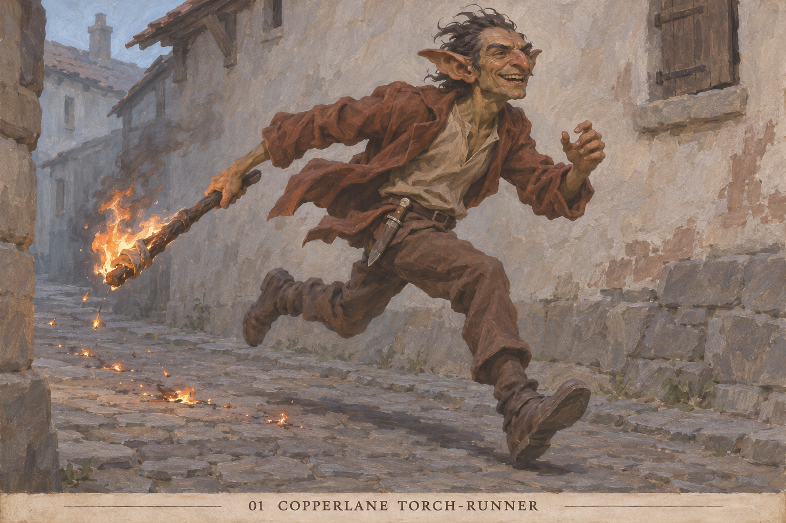

01 / Accepted revision
Copperlane torch-runner
Replace the rejected courier with a reckless male goblin carrying an unruly torch; a visual study, not restoration of the cut card rules.
Creator-approved and saved in the reference library.